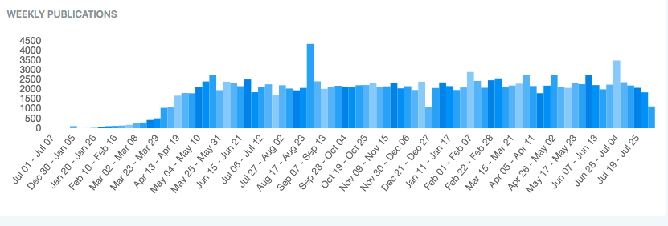

AI Reading Group 2/9/2021
Reading more about COVID
ca. 2000 new papers per week
> 160k total
I am contributing...
LitCovid: https://www.ncbi.nlm.nih.gov/research/coronavirus/
Meta-machine learning opportunities
-
Shi, F. et al. Review of artificial intelligence techniques in imaging data
acquisition, segmentation and diagnosis for COVID-19. IEEE Rev. Biomed.
Eng. 14, 4–15 (2021) doi:10.1109/RBME.2020.2987975. 513 citations
"Deep learning has become the dominant approach in fighting against COVID-19."
- Wynants, L. et al. Prediction models for diagnosis and prognosis of covid-19: systematic review and critical appraisal, 31 March 2020, BMJ doi:BMJ 2020;369:m1328 1347 citations "...all pubished prediction models are poorly reported, and at high risk of bias such that their reported predictive performance is probably optimistic."
- Alabool, H. et al. Artificial intelligence techniques for containment COVID-19 pandemic: a systematic review. Res. Sq. doi:10.21203/rs.3.rs-30432 (2020). 4 citations "To be accepted in the real world, these studies should increase the performance ..."
- Albahri, O. S. et al. Systematic review of artificial intelligence techniques in the detection and classification of COVID-19 medical images in terms of evaluation and benchmarking: taxonomy analysis, challenges, future solutions and methodological aspects. J. Infect. Public Health doi:10.1016/j.jiph.2020.06.028 (2020). 78 citations "...this study proved that the process of evaluating and benchmarking of AI classification techniques... is a critical gap of related literature" (of COVID medical image classification papers)
- Roberts, M. et al. Common pitfalls and recommendations for using machine learning to detect and prognosticate for COVID-19 using chest radiographs and CT scans, Nature Machine Intelligence, 2021 doi:10.1038/s42256-021-00307-0 56 citations
- Wynants, L. et al. Prediction models for diagnosis and prognosis of covid-19: systematic review and critical appraisal, 31 March 2020, BMJ doi:BMJ 2020;369:m1328 1347 citations "...all pubished prediction models are poorly reported, and at high risk of bias such that their reported predictive performance is probably optimistic."
My interest: Developing new methods for phylogentics

|


|
 BEAST developer guide
BEAST developer guide
Tools for developing models Open source => replicable |
Noticeable in this paper
- Is a CT scan/X-ray really more available than a PCR test? What were they thinking?
- Checklists already exists (CLAIM, RQS) but are not used
- (AI) research mostly useless (academic careers exempted)
- Need to know about data => team required